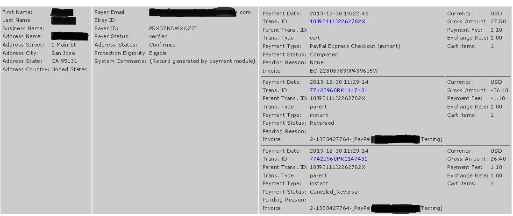

PayPal® Express Checkout Using NVP 84.0
Version 1.0.0 by lat9
Current Support Thread at Zen Cart Forums: http://www.zen-cart.com/showthread.php?211542-PayPal-Express-Checkout-Using-NVP-84-0-Support-Thread
Version History:
- v1.0.0, 2013-12-31: Initial release.
Operation
This Zen Cart payment method replaces the processing for the built-in PayPal Express Checkout (paypalwpp) module, using the more recent Name/Value Pair (NVP) interfaces introduced in NVP interface versions 63.0 to 84.0; refer to PayPal Name/Value Pair API Developer Guide for additional information. This payment method is, essentially, a building block for future payment methods that might choose to implement additional PayPal functionality.
If you have previously installed one of the other PayPal payment methods, that payment method must be removed before you can install the paypalwpp_v84 payment method.
Processing Differences
This payment module was created using the source code for the Zen Cart v1.5.2-RC2 paypalwpp payment method, so those PayPal changes and payment method improvements have been built in! That said, there are a couple of differences in the module's operation (besides the interface change):
- Unlike the built-in PayPal Express Checkout payment method, this plugin supports only the PayPal mode of operation. If your store requires either PayFlow-UK or PayFlow-US mode, you should continue to use the built-in version.
- This payment method introduces another selection for the Require Confirmed Address setting — Always. This setting's choices are now:
- No … a "Confirmed Address" from PayPal is never required. This setting is the default.
- Yes … a "Confirmed Address" is required only if the customer is not currently logged in, i.e. the customer has clicked the "PayPal Express Checkout" button to start the payment process.
- Always … a "Confirmed Address" is always required — even if the customer is logged in. If your store does not collect full address information during account creation, I suggest that you use this setting.
- The display of an order's PayPal history now includes the entire history as part of the Customers->Orders->Edit Order display. The following screenshot shows, for example, a transaction that was paid using the payment method, disputed and subsequently resolved. 
Installation
There are are two core-file overwrites in this plugin. The changes to ipn_main_handler.php are simply additional notification points to allow this and future modules to operate without additional changes to that module. The change to tpl_ec_button.php allows that module to properly display the "Express Checkout" button when this module is enabled.
- Make a backup of your Zen Cart's files and database.
- Copy the files to your cart, after renaming the YOUR_TEMPLATE folder to match your Zen Cart template's name:
- /ipn_main_handler.php
- /includes/auto_loaders/config.paypalwpp_v84.php
- /includes/classes/observers/class.paypalwpp_v84_observer.php
- /includes/languages/english/modules/payment/paypalwpp_v84.php
- /includes/modules/pages/login/header_php_paypalwpp_v84.php
- /includes/modules/payment/paypalwpp_v84.php
- /includes/modules/payment/paypal/paypal_curl_v84.php
- /includes/modules/payment/paypal/paypalwpp_v84_admin_notification.php
- /includes/modules/payment/paypal/tpl_ec_button.php
- /includes/templates/YOUR_TEMPLATE/templates/tpl_shopping_cart_default.php
- Remove any other Zen Cart PayPal payment modules
- Install the PayPal Express Checkout (NVP 84.0) payment method using your admin's Modules->Payment screen.
Un-install
Use your admin's Modules->Payment and remove the PayPal Express Checkout (NVP 84.0) module. You can restore the core file overwrites and the template file to the pre-installation version, but leaving them will not have any adverse affects on your store's operation. Finally, delete the new files provided by this plugin.